Sentaurus Process
3. Two-Dimensional Process Simulation
3.1 Overview
3.2 Defining the Initial 2D Grid and Simulation Domain
3.3 Boron Implantations
3.4 Growing Gate Oxide
3.5 Defining Polysilicon Gate
3.6 Polysilicon Reoxidation
3.7 Saving Snapshots
3.8 Remeshing for LDD and Halo Implantations
3.9 LDD and Halo Implantations
3.10 Spacer Formation
3.11 Remeshing for Source/Drain Implantations
3.12 Source/Drain Implantations
3.13 Contact Pads
3.14 Saving the Full Structure
3.15 Extracting 1D Profiles
3.16 Animated Process Flow
3.17 Assignment
Objectives
- To perform a 2D process simulation using Sentaurus Process.
3.1 Overview
In this section, many widely used process and control commands are introduced in the context of a nominal 0.18 μm n-channel MOSFET process flow. The MOSFET structure is simulated in two dimensions and processing of the isolation is excluded. A simplified treatment is presented using only default parameters and models.
Command files are available in a Sentaurus Workbench project with two instances of Sentaurus Process: The first instance is for the example described below, and the second instance is for the assignment in Section 3.17 Assignment.
The complete project can be investigated from within Sentaurus Workbench in the directory Applications_Library/GettingStarted/sprocess/2DGS.
3.2 Defining the Initial 2D Grid and Simulation Domain
The initial 2D grid is defined with line commands:
line x location= 0.0 spacing= 1.0<nm> tag= SiTop line x location= 50.0<nm> spacing= 10.0<nm> line x location= 0.5<um> spacing= 50.0<nm> line x location= 2.0<um> spacing= 0.2<um> line x location= 4.0<um> spacing= 0.4<um> line x location= 10.0<um> spacing= 2.0<um> tag= SiBottom line y location= 0.0 spacing= 50.0<nm> tag= Mid line y location= 0.40<um> spacing=50.0<nm> tag= Right
Sentaurus Process uses coordinate systems such that 1D and 2D (and 3D) simulations are consistent. For 1D simulations, the natural choice for x is to point downwards (into the wafer); Sentaurus Process keeps this definition for 2D simulations. Consequently, the y-axis points to the side (parallel to the wafer).
Here, a depth-dependent initial mesh is defined, which is tight at the surface (1 nm) and relaxes up to 2 μm into the depth. For the lateral direction, a constant mesh spacing of 50 nm is used.
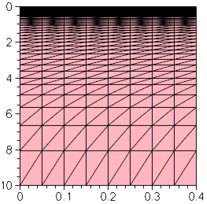
Figure 1. Initial 2D mesh.
Note that:
- Sentaurus Process simulates in one dimension until the first mask is used. The simulation remains 1D if the mask entirely covers the simulation domain or is completely outside the simulation domain.
- Two-dimensional grid initialization must be performed more carefully than for 1D grid initialization to achieve timely solutions because the number of grid points in the x-direction are multiplied by every line in the y-direction.
- The size and dimension of the simulation domain, and its location within a layout, also can be specified using the icwb command (see Section 4.2 Using a Mask Layout to Build the Structure). To process mask information, you also can use the Silicon WorkBench interface (see the Silicon WorkBench Interface module). Both methods allow you to separate mask coordinates from the process flow and, therefore, are highly recommended.
HINT Start with a coarse mesh. Automatic meshing adds mesh points during the simulation. Starting with too many mesh points unnecessarily slows down the earlier parts of the simulation. Meshing after the simulation has started can be controlled by modifying the mesh using refinebox commands.
The initial simulation domain is defined with the region command:
region Silicon xlo= SiTop xhi= SiBottom ylo= Mid yhi= Right
init concentration= 1.0e+15<cm-3> field= Phosphorus
For a 2D simulation, the substrate region is defined by referring to the tag for the x-direction and y-direction. These tags were defined previously in the line commands.
Here, you use an n-doped substrate with a phosphorus concentration of 1015 cm-3. The wafer orientation is set to (100), which is the default.
3.3 Boron Implantations
The following boron implantations are performed:
implant Boron dose= 2.0e13<cm-2> energy= 200<keV> tilt= 0 rotation= 0 implant Boron dose= 1.0e13<cm-2> energy= 80<keV> tilt= 0 rotation= 0 implant Boron dose= 2.0e12<cm-2> energy= 25<keV> tilt= 0 rotation= 0
The first high-energy implantation creates the p-well, the second medium-energy implantation defines a retrograde boron profile to prevent punch-through, and the third low-energy implantation is for a threshold voltage (Vt) adjustment.
3.4 Growing Gate Oxide
The gate oxide is grown at 850°C for 10 minutes in pure oxygen ambient using:
diffuse temperature= 850<C> time= 10.0<min> O2
Before the diffusion step, a remeshing strategy is defined (see Section 2.5 Setting Up a Remeshing Strategy).
The keyword O2 is shorthand for a pure oxygen ambient at a pressure of 1 atm.
The layers command shows that the thickness of the grown oxide is 2.9 nm:
{ Top Bottom Integral Material }
{ -2.041418763714e-03 8.183964101445e-04 2.859815173859e-07 Oxide }
{ 8.183964101445e-04 1.000000000000e+01 9.999181603590e-04 Silicon }
See Section 2.7 Measuring Oxide Thickness for details.
3.5 Defining Polysilicon Gate
The polysilicon gate is created using:
deposit material= {PolySilicon} type= anisotropic time= 1 rate= {0.18}
mask name= gate_mask left=-1 right= 90<nm>
etch material= {PolySilicon} type= anisotropic time= 1 rate= {0.2} \
mask= gate_mask
etch material= {Oxide} type= anisotropic time= 1 rate= {0.1}
First, 0.18 μm of polysilicon is deposited over the entire structure. Here, type=anisotropic means that the layer is grown only in the vertical direction.
Second, a mask is defined to protect the gate area. In this project, only half of the transistor is simulated. Therefore, the left edge of the gate mask is unimportant. As a shortcut, it is set to –1. The name gate_mask is associated with this mask for later reference.
Third, the etch command refers to the previously defined mask and, therefore, only the exposed part of the polysilicon is etched. Since the requested etching depth (0.2 μm) is larger than the deposited layer, this overetching ensures that no residual islands remain. The etching is specified to be anisotropic, that is, the applied mask is transferred straight down, without any undercut.
The second etch statement does not refer to any masks. However, the polysilicon acts naturally as a mask for this selective etching process. Again, a considerable overetching is specified.
Masks can be inverted using the negative option, for example:
mask name=gate_mask segments= {-1 0.09} negative
When used in an etch command, this option prevents etching for y > 90 nm.
Do not use a mask directly in an implant command. Instead,
use the photo command to deposit a layer of photoresist, with a flat top
surface, to perform the implantation, and then to strip the photoresist. For example:
mask name=gate_mask segments= {-1 0.09} negative
photo mask=gate_mask thickness=1<um>
implant Boron energy=100<keV> dose=1e14<cm-2>
strip PhotoResist
Refer to the Sentaurus™ Process User Guide for details about the photo command.
3.6 Polysilicon Reoxidation
To release stresses, a thin oxide layer is grown on the polysilicon before spacer formation:
diffuse temperature= 900<C> time= 10.0<min> O2
Here, the 1 atm default is overwritten by explicitly specifying a pressure of 0.5 atm. In all diffusion steps, Sentaurus Process accounts for a very thin native oxide layer, which is always present on silicon and quickly forms on newly created interfaces. The default thickness is 1.5 nm.
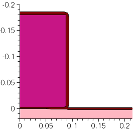
Figure 2. Polysilicon reoxidation.
The edges in the growing oxide, perpendicular to the interface, can be split if their length exceeds a certain value. This value can be set with the following command (unit is cm):
pdbSet Oxide Grid perp.add.dist 1e-7
Its default value is 10e-7 cm. See Section 4.2 Changing Parameters in the Command File for details.
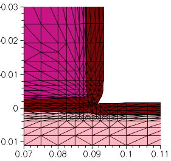
Figure 3. Details of mesh in thin oxide layer and in adjacent polysilicon and silicon. The effect of perp.add.dist is apparent.
3.7 Saving Snapshots
To save a snapshot of the current structure, use:
struct tdr= n@node@_NMOS1 ; # p-Well
The tdr argument specifies that the snapshot is saved in TDR format. The value of tdr specifies the stem used for the file name. Here, the file n1_NMOS1_fps.tdr is created. The figures in this section were generated from such snapshots.
To open a TDR file, open a terminal window and launch Sentaurus Visual with the following command:
svisual n1_NMOS1_fps.tdr
3.8 Remeshing for LDD and Halo Implantations
Next, the low-doped drain (LDD) and halo implantations are performed. However, before that, the meshing strategy is updated:
refinebox Silicon min= {0.0 0.05} max= {0.1 0.12} xrefine= {0.01 0.01 0.01} \
yrefine= {0.01 0.01 0.01} add
grid remesh
The mesh in the lateral direction was specified with the initial line command to be uniform with a spacing of 50 nm. This was appropriate for the steps performed so far, but it will not be sufficiently fine to resolve the source/drain extensions (also known as LDD) as well as the halo implantations.
For this reason, a finer mesh is defined in the area where these profiles are important. This is performed with the refinebox command. The new meshing strategy can be restricted to a material, here Silicon.
Both the min and max arguments take an x-coordinate and a y-coordinate pair as their value, which defines the extent of the refinement box.
The coordinate pair must be enclosed in braces.
The grid spacing is defined with the xrefine and yrefine arguments, which can take up to three numbers as values. The first number specifies the spacing at the top or left side of the box, the second number defines the spacing in the center, and the third number specifies the spacing at the bottom or right side of the box.
When two numbers are given, they define the spacing at the top or left side of the box and the spacing at the bottom or right side of the box, respectively. Only one number can be given when uniform spacing is required.
The add option adds the refinement box to the current list of refinement boxes. The command refinebox remesh forces a remeshing using the new meshing strategy.
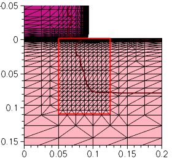
Figure 4. Creating a refinement box to define a finer mesh for LDD and halo implantations.
3.9 LDD and Halo Implantations
The LDD and halo implantations are performed using:
implant Arsenic dose= 4e14<cm-2> energy= 10<keV> tilt= 0 rotation= 0
implant Boron dose= 0.25e13<cm-2> energy= 20<keV> tilt= 30<degree> \
rotation= 0
implant Boron dose= 0.25e13<cm-2> energy= 20<keV> tilt= 30<degree> \
rotation= 90<degree>
implant Boron dose= 0.25e13<cm-2> energy= 20<keV> tilt= 30<degree> \
rotation= 180<degree>
implant Boron dose= 0.25e13<cm-2> energy= 20<keV> tilt= 30<degree> \
rotation= 270<degree>
diffuse temperature= 1050<C> time= 0.1<s> ; # Quick activation
The LDD implantation uses a high dose of 4 x 1014 cm-2 and a relatively low energy of 10 keV. The halo is created by a quad implantation, that is, the implantation is performed in four steps, each at a different angle. This ensures that the boron penetrates well into the channel at the tips of the source/drain extensions. Again, a relatively high total dose of 1 x 1014 cm-2 is used.
The implantations are activated with a short thermal cycle or rapid thermal anneal (RTA).
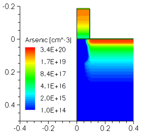
Figure 5. Doping concentration (donor dopants) in the structure after LDD implantations.
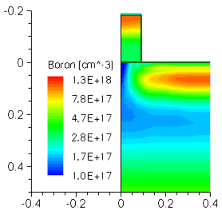
Figure 6. Doping concentration (acceptor dopants) in the structure after halo implantations.
3.10 Spacer Formation
The nitride spacers are formed using:
deposit material= {Nitride} type= isotropic time= 1 rate= {0.06}
etch material= {Nitride} type= anisotropic time=1 rate= {0.084} \
isotropic.overetch= 0.01
etch material= {Oxide} type= anisotropic time= 1 rate= {0.01}
First, a uniform, 60-nm thick layer of nitride is deposited over the entire structure. Here, type=isotropic ensures that the growth rate of the layer is the same in all directions.
Second, the nitride is etched again. However, now anisotropic etching is used. This means that the nitride deposited on the vertical sides of the gate is not fully removed and can serve as a mask for the source/drain implantations.
Finally, the thin oxide layer, grown during the poly reoxidation step, is removed.
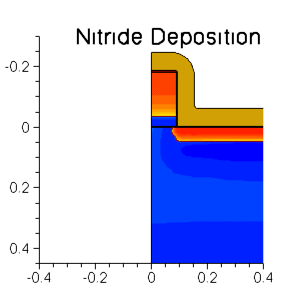
Figure 7. Animation of spacer formation and nitride deposition.
3.11 Remeshing for Source/Drain Implantations
Next, the source/drain implantations are performed. However, before that, the meshing strategy is updated:
refinebox Silicon min= {0.04 0.12} max= {0.18 0.4} xrefine= {0.01 0.01 0.01} \
yrefine= {0.05 0.05 0.05} add
grid remesh
implant Arsenic dose= 5e15<cm-2> energy= 40<keV> \
This refinement box ensures that the mesh is sufficiently fine in the vertical direction to resolve the junction depth.
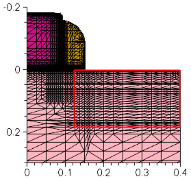
Figure 8. Refinement box for source/drain implantation.
3.12 Source/Drain Implantations
The source and drain regions are created using:
implant Arsenic dose= 5e15<cm-2> energy= 40<keV> \
tilt= 7<degree> rotation= -90<degree>
diffuse temperature= 1050<C> time= 10.0<s>
To ensure a low resistivity of the source and drain regions, this implantation step uses a very high dose of 5 x 1015 cm-2. A tilt of 7° is used to reduce channeling, and a rotation of –90° ensures that the plane of incidence is parallel to the gate stack, such that the 7° tilt angle does not lead to asymmetry between the source and drain.
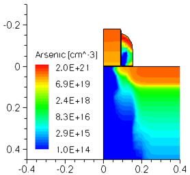
Figure 9. Doping concentration (donor dopants) in the structure after source/drain implantations.
3.13 Contact Pads
Finally, metal pads are defined with:
deposit material= {Aluminum} type= isotropic time= 1 rate= {0.03}
mask name= contacts_mask left= 0.2<um> right= 1.0<um>
etch material= {Aluminum} type= anisotropic time= 1 rate= {0.25} \
mask= contacts_mask
Here, no real backend simulation is performed. Metal pads are created by deposition and etching to identify the contact areas for later use in the device simulator. The method is very similar to the one used for the polysilicon gate definition.
See Section 3.5 Defining Polysilicon Gate.
3.14 Saving the Full Structure
To save the full structure, use:
transform reflect left struct tdr= n@node@_NMOS ; # Final
In addition to the *_fps.tdr files discussed in Section 3.7 Saving Snapshots, other input files for Sentaurus Mesh are saved: a boundary file *_bnd.tdr and a command file *_msh.cmd.
3.15 Extracting 1D Profiles
One-dimensional profiles can be saved at any point of interest in the process flow using:
SetPlxList {BTotal NetActive}
WritePlx n@node@_NMOS_channel.plx y=0.0 Silicon
SetPlxList {AsTotal BTotal NetActive}
WritePlx n@node@_NMOS_ldd.plx y=0.1 Silicon
SetPlxList {AsTotal BTotal NetActive}
WritePlx n@node@_NMOS_sd.plx y=0.39 Silicon
See Section 2.11 Saving the As-Implanted Profile for details.
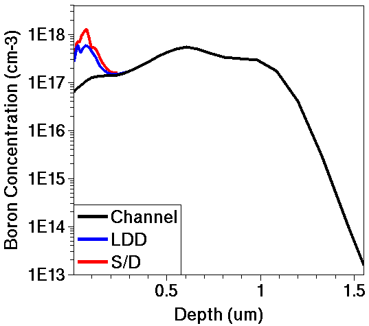
Figure 10. One-dimensional profiles of acceptor concentration (boron) in channel (black), LDD (blue), and source/drain (red) versus depth.
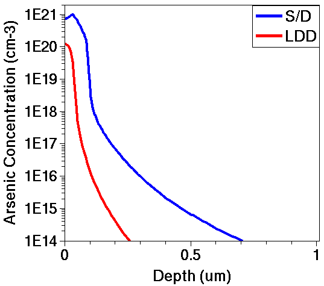
Figure 11. One-dimensional profiles of donor concentration (arsenic) in source/drain (blue) and LDD (red) versus depth.
3.16 Animated Process Flow
Figure 12 shows an animation of snapshots taken at important points of the process flow.
The color shading shows the net doping concentration. Red areas are heavily n-doped, and blue areas are heavily p-doped. Concentrations in-between are colored according to the visible spectrum.
Click to view the command file sprocess_fps.cmd.
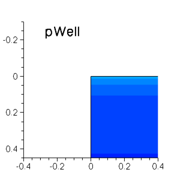
Figure 12. Animation of snapshots taken of process flow.
3.17 Assignment
Create a command file of Sentaurus Process for simulating a vertical npn bipolar transistor from the process flow outlined here.
You can modify the 1D command file from the 1D npn bipolar assignment (see Section 2.13 Assignment) or you can start from the beginning.
Step 1. Substrate Definition
- Declare a 2 μm deep and 30 μm wide p-type substrate of (100) silicon with a boron concentration of 1.0 x 1015 cm-3.
Step 2. Lay Out Device
- Define a masking layer to allow an implantation (called "sinker") to pass into the silicon from 22.0 to 24.0 μm.
- Define a masking layer to allow an implantation (called "base") to pass into the silicon from 1.5 to 13.0 μm.
- Define a masking layer to allow an implantation (called "emitter") to pass into the silicon from 2.5 to 8.0 μm and from 22 to 24 μm.
- Define a masking layer (called "contact") for the etchant to pass through from 3.5 to 7.0 μm, and 10.0 to 12.0 μm, and 22.5 to 23.5 μm.
- Define a masking layer (called "metal") for the etchant to pass through the negative image from 2.0 to 8.0 μm, 9.0 to 13.0 μm, and 22.0 to 24.0 μm.
Step 3. Buried Layer
- Deposit 25 nm of screening oxide.
- Implant antimony with a dose of 1.5 x 1015 cm-2 and an energy of 100 keV.
- Strip the screening oxide.
Step 4. Epi Layer
- Deposit 4 μm of lightly doped silicon.
- Emulate the thermal budget during the epi growth with another annealing at 1100°C for 60 minutes.
Step 5. Sinker Implantation and Drive-In
- Implant phosphorus with a dose of 5.0 x 1015 cm-2 and an energy of 200 keV.
- Use the mask defined in Step 2 for the "sinker".
- Anneal at 1100°C for 5 hours.
Step 6. Base Implantation and Drive-In
- Deposit 25 nm of screening oxide.
- Implant boron with a dose of 1.0 x 1014 cm-2, an energy of 50 keV, and a tilt angle of 7°.
- Anneal at 1100°C for 35 minutes.
Step 7. Emitter Implantation and Activation
- Implant arsenic with a dose of 5.0 x 1015 cm-2, an energy of 55 keV, and a tilt angle of 7°.
- Anneal at 1100°C for 25 minutes.
Step 8. Etch Oxide
- Anisotropically etch the oxide using the "contact" mask previously defined.
Step 9. Deposit Aluminum
- Deposit 1 μm of aluminum.
Step 10. Etch Aluminum
- Anisotropically etch the aluminum using the "metal" mask previously defined.
In this assignment:
- Define an initial mesh and an initial simulation domain before defining the substrate.
- Define a remeshing strategy before the first deposit command.
- Save the 2D structure files after each major implantation and annealing step.
- Use the photo command to deposit photoresist to mask implantation.
Click to view a solution of the command file sprocess1_fps.cmd.
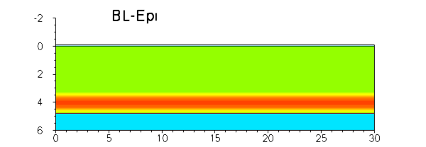
Figure 13. Animation of the process flow of the npn bipolar transistor.
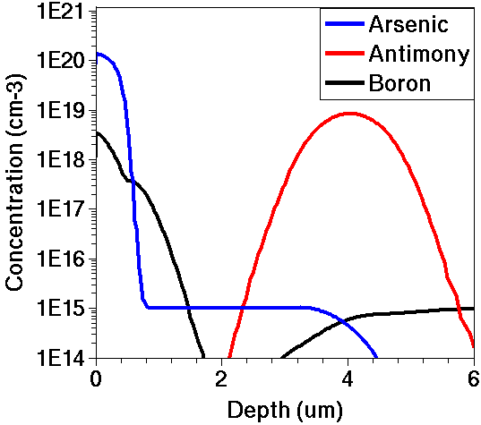
Figure 14. Final doping profiles for cutline at middle of emitter (x = 5 μm).
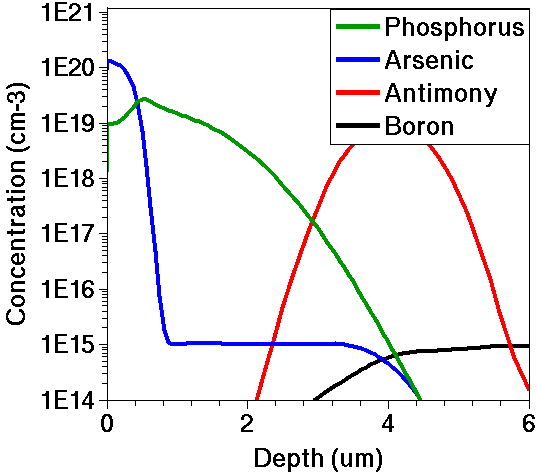
Figure 15. Final doping profiles for cutline at middle of collector sink (x = 23 μm).
Copyright © 2022 Synopsys, Inc. All rights reserved.